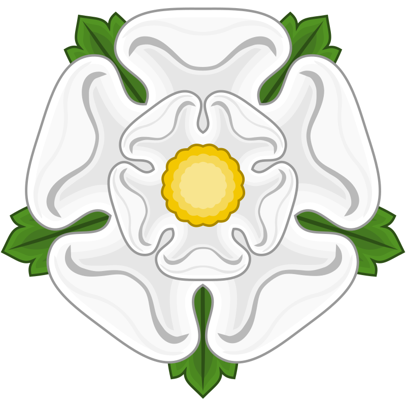
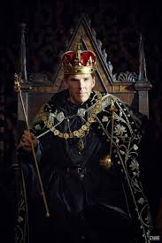

玫瑰戰爭又稱薔薇戰爭是英王愛德華三世（1327年-1377年在位）的兩支後裔——蘭開斯特家族和約克家族的支持者為了爭奪英格蘭王位而發生斷續的內戰。兩大家族都是金雀花王朝王室的分支，約克家族是愛德華三世的次子及第四子的後裔，蘭開斯特家族是愛德華三世的第三子的後裔。玫瑰戰爭是約克家族的愛德華三世的第五代、第六代繼承人對蘭開斯特家族的愛德華三世的第四代、第五代繼承人的王位戰爭。
「玫瑰戰爭」一名當時並未出現，而是在16世紀莎士比亞在歷史劇《亨利六世》中以兩朵玫瑰被拔標誌戰爭的開始後才成為普遍用語。此名稱源於兩個家族所選的家徽，蘭開斯特的紅玫瑰和約克的白玫瑰。
該戰爭大部分由馬上騎士和他們的封建隨從組成的軍隊所進行。蘭開斯特家族的支持者主要在國家的北部和西部，而約克家族的支持者主要在南部和東部。貴族力量在整個戰爭期間被大大削弱。例如，在戰爭爆發前的1425到1449年間，有25個家族滅絕消失，在戰爭期間的1450到1474年間，有24個家族滅絕消失。隨著雄心勃勃公然叫陣的貴族們在戰爭初期大量戰死，接近戰爭後期，越來越少的貴族願意在不確定的戰爭中以他們的生命和頭銜冒險。這是貴族封建力量削弱的主要原因之一，也進而導致了都鐸王朝統治下中央集權君主專制的發展。
戰爭最終以蘭開斯特家族的亨利七世與約克的伊莉莎白聯姻結束，同時也結束了法國金雀花王朝在英格蘭的統治，開啟威爾斯人的都鐸王朝。這也標記著在英格蘭中世紀時期的結束並走向新的文藝復興時代。為了紀念這場戰爭，英格蘭以玫瑰為國花，並把皇室徽章改為紅白的「都鐸玫瑰」。
亨利五世
兩個家族之間的對立始於1399年英王理查二世被其堂弟蘭開斯特公爵亨利四世（亨利·博林布魯克）推翻。
作為愛德華三世第三子岡特的約翰的兒子，亨利的王位繼承權並不大。根據先例，王位應該傳給愛德華三世的次子安特衛普的雷昂納爾(Lionel of Antwerp)的男性後裔；而事實上，理查二世也早已立了雷昂納爾的外孫第四代馬奇伯爵羅傑·莫提梅（Roger Mortimer）為王位繼承人。當理查二世被廢黜時，羅傑已死，王儲是其長子第五代馬奇伯爵埃德蒙·莫提梅。但是，在理查二世死後，亨利·博林布魯克加冕為亨利四世。因為理查二世的統治不得人心，所以亨利的不正當繼承得到了容忍。亨利四世在1413年死去。他的兒子兼繼承人亨利五世是個傑出的軍人，在對法蘭西的百年戰爭中的軍事勝利為他贏得了大量的支持，使得他得以強化蘭開斯特的統治權。亨利五世的短暫統治經歷了一場由蘭利的埃德蒙之子劍橋伯爵理查所領導的政治陰謀。劍橋伯爵因此於1415年在導致阿金庫爾戰役的戰鬥開始時，以叛國而被處決。劍橋伯爵的妻子安妮·莫提梅也有王位繼承權，因為她是羅傑·莫提梅的女兒、埃德蒙·莫提梅的姐姐，是安特衛普的雷昂納爾的第四代後裔。亨利五世死於1422年，而劍橋伯爵和安妮·莫提梅的兒子約克公爵理查對懦弱的亨利六世的王位發起挑戰。
亨利六世
屬於蘭開斯特家族英王亨利六世被不受歡迎的攝政者和謀士所包圍。最有名的是埃德蒙·蒲福和威廉·德拉波羅（William de la Pole），他們被指責無能管理政府並且在對法蘭西的百年戰爭中指揮不利。在亨利六世時期，英國在法國的所有據點，包括亨利五世所贏得的領土，幾乎喪失殆盡。亨利六世開始被視為無能昏庸的國王，同時他還受到令人尷尬的間發性精神疾病的困擾。到1450年代，很多人認為亨利已不適合坐在王位上。蘭開斯特國王的短暫的王朝一直為合法性的問題所困擾，而約克家族相信他們對王位有更強的繼承權。不斷上漲的民眾的不滿情緒、眾多的封建貴族的私人軍隊，和亨利六世朝廷的腐敗使得內戰的政治氛圍已經成熟。
當國王亨利在1453年開始第一輪精神疾病的發作時，攝政理事會建立了，由強大且受歡迎的約克家族首領約克公爵理查·金雀花任攝政王。理查很快更大膽的加強了他對王位的追求，他囚禁了蒲福，並在一系列和亨利的強力支持者(如諾森伯蘭公爵)的小衝突中給予他的同盟者索爾斯伯里和沃裡克以支持。亨利在1455年的痊癒挫敗了理查的野心，約克公爵很快被亨利的王后安茹的瑪格麗特趕出朝廷。由於亨利是個無用的領袖，強力又上進的瑪格麗特王后成了蘭開斯特派系的實際領袖。瑪格麗特王后建立了針對理查同盟並和其他貴族密謀削弱他的影響力。遭到挫敗的理查最終付諸武力，於1455年在第一次聖奧爾本斯戰役中挑起爭端。
1455—1460年的初始階段:
儘管國王亨利和約克公爵理查的支持者之間之前就曾發生過武裝衝突，但玫瑰戰爭的主要武裝衝突階段發生在1455年和1485年之間。
1455年5月22日，約克公爵理查領一支小部隊前往倫敦，在倫敦北面的聖奧爾本斯遭遇趕來的亨利六世的部隊。相對規模較小的第一次聖奧爾本斯戰役是內戰的第一次公開衝突。理查表面上的目的是從亨利國王身邊清除「奸臣」。蘭開斯特家族吃了敗仗並且失去很多領袖，包括埃德蒙·蒲福。約克和他的同盟重新獲得他們的地位和影響力，一時間兩邊似乎都為真正進行會戰所震驚並盡力妥協。當亨利的精神疾病再次發作時，約克重新任攝政王，瑪格麗特受他監護，在理事會的決策中遭到排擠。
在1455年第一次聖奧爾本斯戰役之後的妥協獲得了些許成功，而約克甚至在亨利康復後仍在理事會保有決定性的發言權。導致衝突的問題很快重新浮現，特別是在亨利和瑪格麗特的嬰兒西敏的愛德華與約克公爵的王位繼承順位問題上。瑪格麗特王后拒絕接受任何剝奪她兒子繼承權的方案，然而很明顯只要約克公爵和他的同盟保持軍事優勢她只能忍受。亨利在1456年出巡前往中英格蘭，瑪格麗特不允許他返回王都。國王和王后在中英格蘭受歡迎而在倫敦變得更不受歡迎，倫敦的商人因為貿易的衰退和四處混亂而惱怒。亨利六世在科芬特里建立了朝廷，新的薩摩塞特公爵亨利·蒲福接了他父親的班，成為朝廷上的寵臣。瑪格麗特說服亨利解除約克作為攝政王的職位，而約克被迫返回在愛爾蘭的據點。首都的動亂和南海岸線的海盜活動加劇，而國王和王后仍然致力於保護他們的地位。王后為此第一次在英格蘭引入徵兵制。同時，約克的同盟也是內侄沃裡克伯爵(人稱「國王製造者」)，在倫敦以作為商人階級的保衛者而變得越來越受歡迎。
1459年9月23日，隨著約克從愛爾蘭歸來，衝突再次開始，在斯塔福德郡發生的布洛希思戰役中，一支蘭開斯特家族的大部隊沒能阻止索爾斯伯里勳爵（Lord Salisbury）理查·內維爾（Richard Neville)帶領下的一支約克家族的部隊從約克郡的米德勒姆城堡（Middleham Castel）出發並在魯德婁城堡（Ludlow Castle)和約克會師。蘭開斯特家族在路孚德橋戰役（Battle of Ludford Bridge）中勝利之後，馬奇伯爵愛德華(約克的長子，後來成為愛德華四世)，索爾斯伯里，和沃裡克逃往加萊（Calais）。蘭開斯特家族恢復對王位的完全控制，薩摩塞特被任命為加萊的總督。他驅除沃裡克的企圖被輕易摧毀，約克家族甚至在1459年—1460年從加來發起對英格蘭海岸的幾次突襲，加劇了混亂和動盪的氣氛。
1460年，沃裡克等人準備好對英格蘭發起侵入行動，並很快在根德和倫敦建立據點，在那裡他們得到廣泛的支持。得到一個教皇代表的支持後，他們向北進軍。亨利率軍向南迎擊，而瑪格麗特王后和愛德華王子留在北方。1460年7月10日的北安普敦戰役（Battle of Northampton）對於蘭開斯特家族是災難性的打擊。沃裡克伯爵理查·內維爾帶領的約克軍隊，在蘭開斯特家族的叛軍的幫助下，抓住了亨利國王並將其作為俘虜帶往倫敦。
調解法案(Act of Accord):
隨著軍事上的勝利，約克以蘭開斯特家族王位繼承的非法性提出了對王位的要求。在北威爾斯登陸後，他和妻子西西里·內維爾以君王獨有的儀式進入倫敦。當國會召開時約克直接走向王座，他或許認為貴族會像在1399年對待亨利四世那樣鼓勵他佔據王位。約克宣布了登上王位的要求，但貴族們，包括沃裡克和索爾斯伯里都被他的傲慢所震驚；他們在這個階段尚沒有推翻亨利國王的企圖。他們的野心僅限於清君側。
第二天，約克拿出了詳細的家譜來支持他的訴求，基於他是安特衛普的雷昂納爾的後裔，他獲得了更多的諒解。國會同意給予考慮並認同約克的優先繼承權；但是在投票中他們仍以5票的多數決定讓亨利繼續擔任國王。1460年10月的調解法案達成妥協，在法案中認定約克為亨利的王位繼任者，剝奪了亨利六歲的兒子愛德華王子的繼承權。約克只能將它作為最好的條件接受；它達成了他大部分的願望，特別是被任命為王國攝政王，能夠以亨利之名統治。瑪格麗特和愛德華王子被逐出倫敦。調解法案對和瑪格麗特結盟的蘭開斯特家族而言是無法忍受的，他們隨後在北方組織起一支龐大的軍隊。
蘭開斯特家族的反擊:
約克公爵和索爾斯伯里勳爵在年末離開倫敦以強化北面對抗瑪格麗特王后的軍隊的據點，據報告她已經在約克市聚集部隊。1460年聖誕，理查在韋克平原(Wakefield)附近的桑德爾城堡(Sandal Castle)採取守勢。雖然瑪格麗特的軍隊人數在理查的軍隊的兩倍以上，12月30日，約克還是下令他的部隊離開城堡出擊。他的軍隊在韋克菲爾德戰役中慘敗。理查在戰鬥中被殺，而索爾斯伯里和理查17歲的兒子魯特蘭伯爵埃德蒙(Edmund, Earl of Rutland)被捕並被砍頭。瑪格麗特下令將三人的頭掛在約克的城門上。
根據調解法案，韋克平原戰役使得馬奇伯爵愛德華，即約克的長子，成為約克公爵和王位的繼承人。索爾斯伯里的死同時使他的繼承人沃裡克成為英格蘭最大的土地所有者。瑪格麗特北上到蘇格蘭繼續尋求蘇格蘭的幫助。蘇格蘭王后蓋爾德雷的瑪麗(Mary of Gueldres)同意給瑪格麗特一支軍隊，條件是英格蘭割讓柏維克(Berwick)鎮給蘇格蘭並把她女兒許配給愛德華王子。瑪格麗特同意了，但她沒有錢支付他的軍隊，所以她允諾在南英格蘭的富人無限制掠奪，只要掠奪不發生在特倫特(Trent)河以北。她把軍隊帶到金石城赫爾(Kingston upon Hull)，一路上招募更多人手。
約克的愛德華在這個時候迎擊從威爾斯到達的潘布魯克(Jasper Tudor, 1st Duke of Bedford|Pembroke)，並在什羅普郡的莫提梅路口戰役(Battle of Mortimer's Cross)中完敗他們。他用清晨三個太陽的「幻象」來激勵戰士(一種稱為「幻日(parhelion)的現象」)，告訴他們這是勝利的徵兆，並代表著約克的三個兒子—他自己，喬治和理查。這也導致後來愛德華採用'「燦日(sunne in splendour)'」的符號作為個人徽章。
瑪格麗特那個時候已經向南移動，所到之處一片浩劫，她的軍隊在掃過富裕的英格蘭南方的時候通過掠奪在所征服的土地上的戰利品來支持開銷。在倫敦，沃裡克以此為宣傳在整個南方強化對約克家族的支持—科芬特里鎮改變陣營投靠約克家族。沃裡克沒能及時建立一支軍隊，沒有愛德華部隊的增援，他在聖奧爾本斯戰役因為蘭開斯特家族的提前到來措手不及被抓獲。在第二次聖奧爾本斯戰役中，王后贏得了蘭開斯特家族最有決定性的勝利，在約克家族的部隊逃離時留下了亨利國王，他在一棵樹下被找到，並且安然無恙。亨利在戰役之後立刻封了三十名蘭開斯特家族的戰士為騎士。隨著蘭開斯特軍隊向南進發，恐懼的氣氛席捲倫敦，到處是野蠻的北方人將要洗劫該城的流言。倫敦人關閉城門並拒絕提供食物給王后的軍隊，他們就在周圍的赫特福德郡和米德爾塞克斯(Middlesex)劫掠。
約克家族的勝利:
愛德華在這個時候在和沃裡克會師從西面向倫敦行軍。由於和王后向北往丹斯泰保(Dunstable)的撤退巧合，這使得愛德華和沃裡克得以帶軍隊進入倫敦。他們受到了熱烈的歡迎，並從這個基本上支持約克家族的城市得到了錢和補給。愛德華現在不能僅僅宣稱為國王除去奸臣，隨著他父親和弟弟在韋克菲爾德被殺，這已經成了爭奪王位的戰爭。愛德華現在需要得到授權，而當倫敦主教向倫敦的民眾徵詢意見時，他們以「愛德華國王」的呼聲作出回答。這很快得到了國會的確認，愛德華在一個倉促安排的儀式中於西敏大教堂在歡樂的氣氛中非正式的登基了。愛德華和沃裡克就這樣佔領了倫敦，雖然愛德華宣誓他在亨利和瑪格麗特被處決或流放之前不會舉行正式加冕。他也宣布根據調解法案亨利因為縱容王后起兵對抗他的合法繼承人而失去了王位；雖然這時這已經被廣泛的論證為愛德華的勝利，王位的合法繼承已經恢復，而亨利和他所有的蘭開斯特家的前任都不是合法的。這個論證就是國會上一年所接受的理由。
愛德華和沃裡克向北進軍，一邊聚集起一支大軍，並在陶頓(Towton)和同樣壯觀的蘭開斯特軍隊交戰。在約克附近的陶頓戰役是玫瑰戰爭中到目前為止最大的戰役。兩邊都同意問題將在那天解決，沒有任何妥協。估計40-80,000人參加了戰鬥，其中超過20,000人在戰役中(和之後)被殺，在當時是個巨大的數字，並且是英格蘭土地上單日死亡人數的最高紀錄。新國王和他的軍隊取得了決定性的勝利，蘭開斯特家族滅亡，大多數首領被殺。和他們的兒子愛德華一起等在約克的亨利和瑪格麗特在得知戰況後向北逃跑。很多倖存的蘭開斯特貴族加入了愛德華國王的陣營，其餘未叛變的被趕到北部邊界地區和一些威爾斯的城堡中。愛德華前進並佔領約克，在那裡他見到了他父兄和索爾斯伯里的腐爛的頭顱，這些很快就被戰敗的蘭開斯特領主們的頭所代替，例如臭名昭著的斯基普頓（Skipton-Craven）的克利福德（Clifford）勳爵，他曾在韋克菲爾德戰役後下令處決愛德華的弟弟魯特蘭伯爵埃德蒙。
亨利和瑪格麗特逃到蘇格蘭，在那裡他們待在詹姆斯三世的王廷，兌現他們先前關於割讓柏維克(Berwick)給蘇格蘭的許諾，後來也指揮軍隊入侵卡萊兒(Carlisle)。但由於缺乏金錢的資助，他們很快地被正在掃除蘭開斯特在北部郡縣勢力的愛德華的人所擊退。
愛德華四世的正式加冕於1461年6月在倫敦舉行，他的支持者熱烈歡迎愛德華四世成為英格蘭的新國王。愛德華也得以平安統治十年。
在北方，愛德華在1464年之前沒有取得完全的控制，除了幾次叛變，幾個蘭開斯特指揮官佔據了幾個城堡數年。Dunstanburgh, Alnwick (波西(Percy)家族的據點)和Bamburgh是最後陷落的城堡的其中幾個。最後一個投降的蘭開斯特的城堡是強大的堡壘Harlech(在威爾斯)，經過7年圍城後它在1468年開城投降。被廢黜的國王亨利在1465年被捕，囚於倫敦塔，以當時而言，他受到了相當的優待。
1464年又有兩次蘭開斯特叛亂。第一次衝突是4月25日的Hedgeley荒原戰役，第二次是5月15日的Hexham戰役。兩次叛亂都由沃裡克的弟弟約翰·內維爾(John Neville, 1st Marquess of Montagu)所平定。
1469–1471年間衝突的繼續:
1467–1470年間，國王愛德華和他曾經的良師益友，權利強大的沃裡克伯爵內維爾—"造王者"之間的關係急劇惡化。其中幾個原因，但主要起源於愛德華1464年決定秘密和伊麗莎白·伍德維爾(Elizabeth Woodville)結婚。愛德華後來宣布關於他結婚的新聞為既成事實,使得沃裡克極為尷尬，因為他曾商議愛德華和一位法國女性的聯姻，他認為有和法國結盟的必要。當伍德維爾家族在朝廷上比內維爾家族受寵時，尷尬轉成了苦澀。其他的因素和沃裡克的幻想破滅交織在一起：愛德華傾向於和勃艮第(而非法蘭西)結盟，以及愛德華不情願他的兄弟克拉倫斯公爵喬治迎娶沃裡克的長女伊莎貝爾·內維爾(Isabel Neville)。愛德華的受歡迎程度也在此期間減退，因為高昂的稅率和法律與秩序的經常性中斷。
到1469年，沃裡克和愛德華嫉妒而善變的弟弟喬治結成了同盟。他們組織的一支軍隊在Edgecote荒原戰役擊敗國王，並把愛德華扣在約克郡的Middelham城堡。沃裡克處決了王后的父親Rivers第一伯爵理查·伍德維爾。他迫使愛德華在約克召集國會，計劃將宣布愛德華為非法並將王位傳給克拉倫斯公爵喬治作為愛德華的繼承人。但是，國家處於混亂使愛德華能夠喚起他另一個弟弟格洛斯特公爵理查和大部分貴族的忠誠心。格洛斯特公爵領著大軍前來解放了國王。
沃裡克和克拉倫斯公爵被宣布為叛國者並逃往法蘭西，那裡路易十一在1470年正受到安茹的瑪格麗特要求他入侵英格蘭並幫她受俘的丈夫重新取得王位的壓力。這時路易建議沃裡克和瑪格麗特建立聯盟，這個想法讓曾經為敵的兩方一開始都很難受，但最後在意識到潛在的利益時又都同意了。但雙方無疑同床異夢：沃裡克需要一個傀儡國王亨利或是他年輕的兒子；瑪格麗特要重新獲得她家庭的領土。無論如何，沃裡克的幼女安妮·內維爾和瑪格麗特的兒子前威爾斯親王西敏的愛德華的婚事被雙方同意，沃裡克並於1470年秋入侵英格蘭。
當約翰·內維爾轉而支持他的兄長沃裡克時，輪到愛德華四世被迫逃離。愛德華對內維爾從北面來的大軍措手不及只得命令軍隊分散。愛德華和格洛斯特公爵從唐卡斯特（Doncaster）逃到海岸線然後從那裡去往荷蘭並流亡於勃艮第。沃裡克成功從法蘭西入侵，他解放並恢復亨利六世王位的計劃很快有了結果。10月，亨利六世在倫敦的街上作為復位的國王遊行，而愛德華和理查被宣布為叛國者。但沃裡克的成功是短暫的。受到路易國王許諾在尼德蘭的領土的誘惑，他過度擴張了他的計劃並隨法蘭西國王入侵勃艮第。這導致本就是愛德華妹夫的勃艮第的大膽的查理(Charles the Bold)支持愛德華。在1471年他提供資金和軍隊發動對英格蘭的入侵。同年愛德華在巴內特戰役擊敗沃裡克。蘭開斯特的其餘部隊在蒂克斯伯里戰役被滅，蘭開斯特的王位繼承人西敏的愛德華王子及索默塞特公爵的後裔們等蘭開斯特家族的合法男性成員全部被殺。亨利六世很快被謀殺(1471年5月14日)，強化了約克家族對王位的佔有。亨利六世死後，蘭開斯特公爵約翰再無合法男系後裔在世。
西敏的愛德華王子的遺孀安妮·內維爾後來嫁給愛德華的幼弟格洛斯特公爵理查為妻。
理查三世

1471年愛德華四世的復辟有時被視為玫瑰戰爭的結束。在愛德華其餘的統治時期恢復和平，但是在1483年他突然死去之後，政治和王朝的混亂又爆發了。愛德華四世治下，王后伍德維爾德的親戚安東尼·伍德維爾（Anthony Woodville）和托馬斯·格雷（Thomas Grey）和其他憎恨伍德維爾新取得的在朝廷上的地位並視他們為渴望權力的「暴發戶」的人之間形成派系鬥爭。愛德華早亡，而他的繼承人愛德華五世才12歲。伍德維爾家族處於可以影響年輕國王將來統治的地位，因為愛德華五世在魯德婁（en:Ludlow）於安東尼·伍德維爾的監管下成長。這對於反伍德維爾的派系而言是不可接受的，在爭取攝政王位置和內閣的控制權的鬥爭中，由愛德華四世在病榻上任命為英格蘭攝政王的愛德華的弟弟格洛斯特公爵理查成為反伍德維爾派系的實際領袖。
在威廉·喜士定（William Hastings）和亨利·斯塔福德的幫助下，格洛斯特公爵在白金漢郡斯托尼斯特拉福（Stony Stratford）的伍德維爾家族那裡俘獲了年輕的國王。此後愛德華五世被格洛斯特公爵拘禁於倫敦塔，後來他的弟弟9歲的約克公爵理查也被送到那裡。控制了兩個男孩之後，理查宣稱愛德華四世和伊莉莎白·伍德維爾的婚姻非法，所以兩個孩子是私生子。國會表示同意並啟動Titulus Regius法案，正式任命格洛斯特公爵為理查三世。受關押的兩個男孩（也被稱為「塔裡的王子」（Princes in the Tower））失蹤了，兩人很可能被謀殺；至於被誰謀殺以及誰下的命令現在依然是英格蘭歷史上最有爭議的主題之一。
因為理查是約克家族方面最傑出的將領，很多人接受了他為一個更能保持約克家族權力地位的統治者，而不是一個必須通過攝政委員會進行統治的男孩。另一方面，蘭開斯特家族的希望集中於亨利·都鐸，其父親裡奇蒙第一伯爵埃德蒙·都鐸是亨利六世的同母異父兄弟。但是亨利對王位的繼承權是通過他母親瑪格麗特·蒲福（Margaret Beaufort），她是愛德華三世的後裔，因為她是約翰·蒲福的孫女，而約翰是愛德華三世的孫子，也就是岡特的約翰的私生子。
亨利·都鐸
1485年，亨利·都鐸的軍隊在博斯沃思原野之戰擊敗理查的軍隊，亨利登基，稱為亨利七世。然後亨利通過迎娶愛德華四世的長女，約克家族最佳的繼承人約克的伊麗莎白為妻來鞏固他的統治。這樣，他重新統一了兩個王族，並把紅玫瑰和白玫瑰這兩個對立的符號合併到紅白都鐸玫瑰的徽章中。亨利一有機會就處決其他可能的王位繼承人來確保他的地位，如在1499年處決喬治的兒子也是約克家族乃至整個金雀花家族最後的合法男系成員第十七代沃里克伯爵愛德華。
很多史學家以亨利七世繼位為戰爭結束的標誌。其他人則認為玫瑰戰爭直到1487年的斯托克戰役(Battle of Stoke)之後才結束，該戰役因一名王位的偽冒者的出現而產生，一個名為Lambert Simnel的男孩長得很像約克家族最佳的男繼承人沃裡克伯爵。偽冒者的計劃從一開始就註定失敗，因為年輕的伯爵還活著並被亨利國王所拘禁，所以沒人真正懷疑過他除了騙子以外還能是什麼。在斯托克，亨利擊敗了林肯伯爵約翰·德拉波羅的軍隊(John de la Pole, Earl of Lincoln) — 他被理查三世任命為繼承人，但是在博斯沃思原野戰役之後被亨利取消 — 這除掉了約克家族剩餘的抵抗。Simnel在叛變中的活動被赦免並被送去王室廚房工作。後來約翰的弟弟埃德蒙、理查作亂，也被亨利七世鎮壓而出逃（1501年）。約翰的另一個弟弟威廉雖然沒有一同作亂、覬覦王位之舉，也沒有和兄弟們一起出逃，但難以取信於亨利七世，被以涉嫌同謀為名囚禁於倫敦塔（1502年）直至去世（1539年）。亨利八世也繼續其父的方針處決威脅王位的人，一登基就處決了埃德蒙。
轉自:維基百科